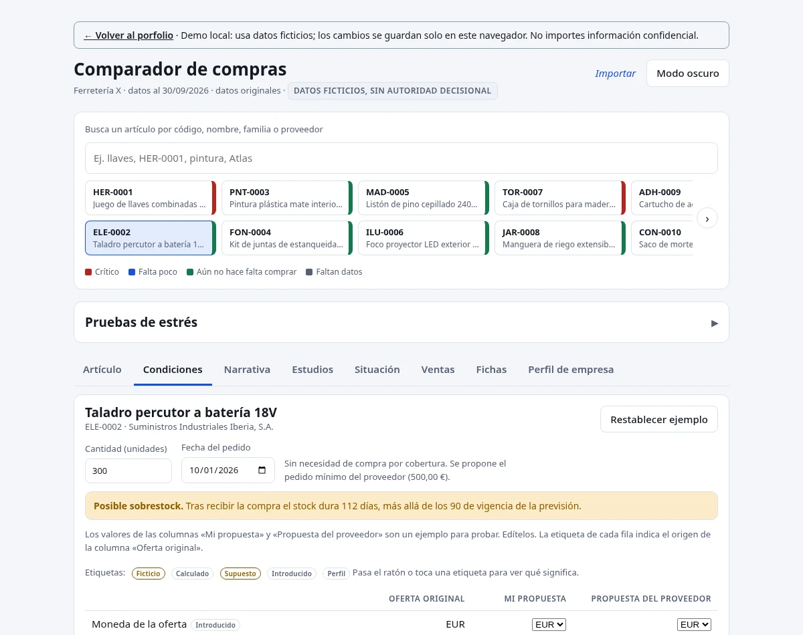

Recuperación de gastos e IVA
Revisión de gastos e identificación de IVA deducible, atendiendo a su tratamiento contable y fiscal.
Más de 20 años de experiencia contable. Identifico desviaciones, recupero valor y diseño herramientas de control interno con inteligencia artificial para anticipar riesgos antes de que se conviertan en pérdidas.
Una aplicación interactiva demuestra cómo la contabilidad puede convertirse en una herramienta preventiva para compras, tesorería y márgenes.
Evalúa una operación antes de comprometer recursos: compara tres propuestas, analiza existencias y proyecta el efecto sobre la liquidez.
Datos ficticios. Motor de reglas y cálculos financieros, desarrollado con apoyo de IA. Prototipo de soporte a la decisión, no sistema validado en producción.

Captura de la aplicación · La demostración permite modificar los datos y recalcular resultados.Experiencia práctica en recuperar valor, corregir errores y mejorar la fiabilidad de la información que sustenta las decisiones empresariales.
Revisión de gastos e identificación de IVA deducible, atendiendo a su tratamiento contable y fiscal.
Detección y corrección de descuadres, errores y desviaciones contables y fiscales.
Revisión de saldos y descompensaciones para preservar la continuidad de la información.
Identificación de artículos procedentes de ejercicios anteriores que permanecen inmovilizados.
Detección de cálculos incorrectos que distorsionan el coste y la lectura de los márgenes.
Conciliaciones, revisión de movimientos y mecanismos de control interno para anticipar riesgos.
Combino criterio contable, conocimiento de sistemas empresariales y herramientas de análisis para abordar problemas de negocio.
Apertura y cierre contable · Impuestos · Conciliaciones · Tesorería · Contabilidad financiera y de costes · Control interno.
Dos aplicaciones educativas complementarias que conectan finanzas, aprendizaje y tecnología.
Generador educativo de balances de situación y cuentas de pérdidas y ganancias, con ratios financieros y ecuación patrimonial según la normativa española. Interfaz en catalán.
Explorar aplicación ↗Plataforma de cuestionarios de contabilidad, análisis económico-financiero, economía y marketing, con validación de respuestas e información complementaria.
Explorar aplicación ↗Más de dos décadas en contextos empresariales diversos, con una visión de la contabilidad vinculada a la realidad operativa del negocio.
Formación orientada al análisis de datos.
Disponibilidad para trabajo presencial, híbrido y remoto.
Andrés Ragel · Contabilidad senior, control financiero e IA aplicada.